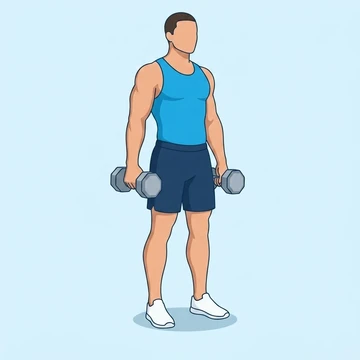
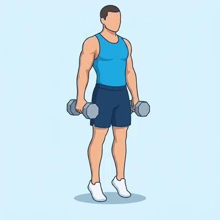
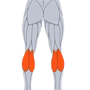
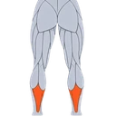

Dumbbell Calf Raise
A weighted calf raise holding dumbbells at the sides, performed on an elevated edge for a full stretch.
Lower legs · Dumbbell · Intermediate


Muscles worked by the Dumbbell Calf Raise
Primary

CalvesGastrocnemius
SoleusSecondary
Also called: calf, calves, gastrocnemius, gastroc, soleus, deep calf.
Equipment
Also called: db, dumbell, hex dumbbell, rubber dumbbell, hand weight.
How to do the Dumbbell Calf Raise
- Stand holding a dumbbell in each hand at your sides.
- Place the balls of your feet on a raised surface with heels hanging off.
- Press through the balls of your feet to raise your heels as high as possible.
- Squeeze your calves at the top of the movement.
- Lower your heels below the platform to stretch the calves.
- Repeat for the desired number of reps.
Form tips
- Avoid bouncing out of the bottom stretch position.
- Keep your legs straight but not locked throughout.
- Prevent your ankles from rolling outward as you rise.
At a glance
| Body part | Lower legs |
|---|---|
| Category | Strength |
| Force type | Push |
| Mechanic | Isolation |
| Difficulty | Intermediate |
| Equipment | Dumbbell |
| Goals | Hypertrophy |
| Tags | Knee safe, Shoulder safe, Lower back safe, No axial load |
| MET | 5.0 (metabolic equivalent, for calorie estimates) |
| Unilateral | No |
| Bodyweight | No |
| Dataset id | dumbbell-calf-raise |
Dumbbell Calf Raise in German & Spanish
| German | Kurzhantel Wadenheben |
|---|---|
| Spanish | Elevación de Talones con Mancuernas |
Descriptions, instructions and tips ship in all three languages in the JSON.
Exercise data (JSON)
The record below is exactly what exercises.json ships for this exercise — names, descriptions, instructions and tips in English, German and Spanish.
{
"id": "dumbbell-calf-raise",
"name_en": "Dumbbell Calf Raise",
"name_de": "Kurzhantel Wadenheben",
"name_es": "Elevación de Talones con Mancuernas",
"description_en": "A weighted calf raise holding dumbbells at the sides, performed on an elevated edge for a full stretch.",
"description_de": "Ein stehendes Wadenheben mit Kurzhanteln in den Händen, bei dem die Fersen unter die Kante einer Erhöhung absinken und maximal angehoben werden.",
"description_es": "Una elevación de talones con mancuernas sobre una superficie elevada que trabaja gemelos y sóleo en rango completo.",
"category": "strength",
"force_type": "push",
"mechanic": "isolation",
"difficulty": "intermediate",
"equipment": "dumbbell",
"body_part": "lower_legs",
"primary_muscles": [
"gastrocnemius",
"soleus"
],
"secondary_muscles": [
"forearm_flexors"
],
"goals": [
"hypertrophy"
],
"tags": [
"knee_safe",
"shoulder_safe",
"lower_back_safe",
"no_axial_load"
],
"variation_group": "calf-raise",
"is_unilateral": false,
"is_bodyweight": false,
"instructions_en": [
"Stand holding a dumbbell in each hand at your sides.",
"Place the balls of your feet on a raised surface with heels hanging off.",
"Press through the balls of your feet to raise your heels as high as possible.",
"Squeeze your calves at the top of the movement.",
"Lower your heels below the platform to stretch the calves.",
"Repeat for the desired number of reps."
],
"instructions_de": [
"Stehe mit je einer Kurzhantel an den Seiten.",
"Stelle die Fußballen auf eine erhöhte Unterlage, Fersen hängen frei.",
"Drücke durch die Fußballen, um die Fersen so hoch wie möglich zu heben.",
"Spanne die Waden oben an.",
"Senke die Fersen unter die Plattform, um die Waden zu dehnen.",
"Wiederhole die gewünschte Anzahl an Wiederholungen."
],
"instructions_es": [
"Ponte de pie sujetando una mancuerna en cada mano a los costados.",
"Coloca las puntas de los pies sobre una superficie elevada con los talones colgando.",
"Empuja a través de las puntas de los pies para subir los talones lo más alto posible.",
"Aprieta los gemelos en la parte superior del movimiento.",
"Baja los talones por debajo de la plataforma para estirar los gemelos.",
"Repite el número de repeticiones deseado."
],
"tips_en": [
"Avoid bouncing out of the bottom stretch position.",
"Keep your legs straight but not locked throughout.",
"Prevent your ankles from rolling outward as you rise."
],
"tips_de": [
"Federe unten nicht nach, sondern halte die Dehnung kurz.",
"Drücke dich über den großen Zeh ab, ohne die Knöchel nach außen kippen zu lassen.",
"Beuge die Knie nicht, die Bewegung kommt nur aus den Sprunggelenken."
],
"tips_es": [
"Evita rebotar abajo y haz una pausa breve en el estiramiento.",
"Mantén las rodillas extendidas pero sin bloquearlas.",
"Sube y baja despacio para no perder el equilibrio."
],
"met": 5.0,
"images": {
"flat": {
"start": "images/flat/dumbbell-calf-raise-start.webp",
"peak": "images/flat/dumbbell-calf-raise-peak.webp"
}
}
}Fetch just this exercise
const { exercises } = await fetch(
"https://exercise-dataset.com/exercises.json"
).then(r => r.json());
const ex = exercises.find(e => e.id === "dumbbell-calf-raise");Free for personal and commercial in-app use with attribution (“Exercise data by RepDB”) — see the license and ready-made attribution snippets. Redistributing the data as a dataset or API is not permitted.